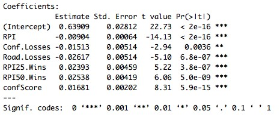

Predicting March Madness Rankings: An Analytic Approach
Ravi Betzig '20, Ryan Burke '19, Seth Barshay '20, and Benjamin Winston '19 as a final paper for the Sports Analytics class.
Introduction
Each March, the NCAA Division I Men’s Basketball Tournament captivates fans across the country and showcases the nation’s top college basketball talent. While much of the competition’s publicity centers around the three-point buzzer pointers and the creation of speculative brackets, the yearly competition is shaped by the selection and seeding of college teams by the NCAA selection committee. The selection and seeding of teams determines that matchups for the tournament, with the highest seeded teams playing the lowest in a single-elimination style. Seeding also serves as a crutch for many creating speculative brackets, with conservative speculators choosing the higher ranked team. And of course, rankings help determine betting lines and payouts, whether through legal or illegal means.
Background
Each year, 68 college teams qualify for the NCAA Division I Men’s Basketball Championship. A team may be selected for the tournament as either an “automatic bid” or an “at-large bid.” 32 automatic bids to the NCAA tournament are given to the winners of each Division 1 college basketball conference. The NCAA selection committee selects the 36 at-large teams from the 319 that did not win a Conference Championship. The committee consists of 10 Division I men’s athletic directors and commissioners who serve 5 year terms. The committee members receive a “team sheet” for each team with 21 parameters, such as win-loss record, RPI and performance versus various RPI sub-groups (Figure 1). This helps them make their decision. While the auto-bid system ensures that every conference will be represented by at least 1 team, the at-large bids tend to be concentrated amongst a selection of “power” conferences (Atlantic Coast Conference, Big East Conference, Big 12 Conference, Big Ten Conference, Pac-12 Conference, Southeastern Conference, American Athletic Conference). These power conferences tend to have more historical success, more TV exposure and larger athletic department budgets than so-called “mid-major” conferences. Once selected, the selection committee ranks these teams from 1 to 68, known as the “seed list.” Then, the committee assigns seeds to each of the 68 teams, with the top 4 teams on the seed list receiving 1 seeds, the next 4 teams on the seed list receive 2 seeds and so forth.
Since 1981, the Rating Percentage Index (RPI) has been heavily used by the selection committee to evaluate and rank teams. The RPI is formulated through a combination of a team’s winning percentage, their opponents’ winning percentage and their opponents’ opponents winning percentage. Road wins are weighted more heavily than home wins in the RPI. There are several concerns with the RPI: (1) It tends to overemphasize strength of schedule (2) It doesn’t take into account margin of victory (3) Enterprising athletic directors can design their non-conference schedule to improve their RPI. Despite these objections, the selection committee relies heavily on the RPI and its derivative metrics, such as win-loss record versus the RPI top 50, and win-loss record versus the RPI top 100. However since our research seeks to predict the behavior of the NCAA selection committee rather than the success of the basketball teams, we will use RPI despite its imperfections.
From 1985 to 2001, the NCAA tournament featured 64 teams. However, the tournament expanded to 65 teams in 2001, and again to 68 teams in 2011. Now that the number of teams in the tournament is not a power of 2, there is a preliminary round called the “First Four”. The four worst at-large teams and the four worst auto-bids play in the First Four. The winners of the four First Four games proceed to the tournament proper. The winners of the two First Four games featuring auto-bids receive 16 seeds, while the winners of the two First Four games featuring at-large teams are seeded at the bottom of the at-large teams: typically around an 11 or 12 seed.
Once teams are seeded from 1 to 16, they the Committee determines which teams play each other and where the games will take place. Our research solely looks at team selection and ranking, and does not consider the game matchup and location. These questions are not within the scope of these project for a variety of reasons. First, it’s relatively difficult to answer these questions. It’s hard enough to figure out whether a team will receive a 10 or 11 seed, let alone which 6 or 7 seed they will play in the first round. Second, we did not find this worthwhile to pursue. Team matchups and locations, though based on a variety of factors, mainly follow the team rankings. Teams with high rankers tend to play at sites closer to their home campus.
Literature Review
Though the selection process is critical to the structure and outcome of the March Madness tournament, limited statistical analysis has been performed. In 2006, J. Cole Smith of Clemson University, Barbara M. P. Fraticelli of Virginia Tech, and Chase Rainwater of the University of Arkansas determined seed rankings using a mixed-integer program. Rankings were optimized by restricting all variables to be integers. Their predicted results are compared against 2004 and 2005 tournament data. However, 2001 to 2010, the NCAA tournament only had 65 teams and a slightly different selection criteria. While this proved to be an accurate model, it is not applicable to the modern day tournament.
More recently, Jay B. Coleman of the University of North Florida, Michael J. DuMond of the Economists Incorporated, and Allen K Lynch of Mercer University created an 8 factor model to identify the at-large teams from 2009-2013. Their model included RPI, losses below 0.500 in-conference, wins against the RPI top 25, wins against the RPI second 25, games above 0.500 against the RPI second 25, games above 0.500 against teams ranked 51–100 in RPI, road wins, and being in the Pac-10/12. Coleman and his coauthors were able to successfully predict 68 out of 72 at-large bids with 2014 and 2015 as testing data.
Since the 36 at-large teams are decided by a 10 person committee, there are concerns over possible biases that may affect decisions. Coleman, DuMond, and Lynch examined 910 teams that were in the tournament from 1999 to 2008, and possible bias in the selection and seeding of teams. Their selection (logit) analysis and seeding (cumulative probit) analysis revealed that teams with committee representation were viewed more favorably. Shapiro et al. (2009) found similar results, but found no correlation between team location, wealth, or public reputation as a factor in committee decisions. Thus in our analysis, we can safely ignore the effects of location, wealth, and reputation. Because the members on the 10-person committee frequently rotate, we do not need to account for the effects of committee representation bias. As shown by Shapiro et al. (2009) and Coleman et al. (2010), this biasness is random and relatively insignificant.
Methodology
First, we analyzed historical results to create a model to predict which NCAA basketball teams will make the NCAA Division I Men’s Basketball Tournament. We included the variables used by the NCAA selection committee in selecting teams, such as RPI, strength of schedule, scoring margin, and record vs RPI top 25 teams. Note that we excluded from our analysis teams that were ineligible for the tournament. These teams were ineligible for a variety of reasons, most commonly due to academic ineligibility or as part of their transition process from Division 2. In nearly every case, the ineligible team would not have qualified for the tournament and its exclusion did not affect our analysis. However, there are 3 notables cases that did have an impact: Connecticut 2013, Louisville 2016, and SMU 2016. Prior to excluding these teams, they had above a 99% chance of making the tournament. Clearly, our adjustment for ineligible teams increased the confidence of our model significantly.
Next, we created a logistic regression model to determine which teams made the tournament. Since teams that win their conference tournament automatically receive bids, our model looked at the 319 teams that did not win their conference but may qualify based upon the information that appears on their team sheets. We believed the logistic model was appropriate since here we have a binary outcome: either a team makes the tournament, or it does not. Our initial logistic regression predicted how likely each school was to make the tournament using almost all the variables scraped. We then eliminated all the variables (total wins, non-conference RPI, scoring margin) that were highly correlated with other variables in the model. Based on prior research, we define “highly correlated” as r > 0.8.
This initial logistic regression model had a very high number of variables (21). To avoid overfitting our model, we decreased the number of variables. We used a backward elimination stepwise method that optimized the Bayesian information criterion (BIC) of the model. BIC penalizes models with high numbers of parameters, which eased our concern that having dependent parameters would violate the assumptions of a logistic regression.
Our model used 2011-2015 seasons as training data and the 2016 and 2017 seasons as testing data. After calibrating our model using the training data set, we predicted how likely each school, who didn’t already win their conference, was to make the tournament in 2016 and 2017. Our model selected the 36 schools in each year with the highest probability of receiving an at-large bid.
Once our model had predicted which 36 teams were likely to receive at-large bids in a given year, the next step was to rank these teams from 1 to 68. We used a linear regression-based method to do this. Initially, we considered using a single linear regression to rank the 68 teams, but we were worried that that would not be a good fit. One simple model would not be an accurate representation of all 68 teams, as shown below (Figure 1):

The relationship between school RPI and tournament seed does not follow a singular linear distribution. Instead, there are two clusters of school. Since there is a wide disparity between the strengths of the qualifying teams, we create two groups to place teams into, a “top bucket” and a “bottom bucket.” The top bucket included the at-large teams, which were selected solely on season performance, and the automatic qualifiers that would have still been selected on performance had they not won their conference. To identify these teams, we plugged the automatic teams into our initial logistic regression to calculate the probability of selection. To reiterate, automatic bid teams with at least a 1% probability of making the tournament were placed in this top bucket along with the at-large bids. The bottom bucket included teams that would not have been selected had they not won their conference championship. We defined this as teams that had less than a 99% chance of making the tournament had they not received an autobid.
We assume that this two bucket strategy is an accurate way of separating teams into distributions. However, we take a very cautious and conservative approach by creating a large overlap between the two buckets. Auto-bid teams with between a 1% and 99% were placed into both brackets. Even so, relatively few teams ended up in both buckets. In 2016, 9 of the 68 selected teams were in both groups. In 2017, only 6 of the 68 teams were in both. Historically, these teams that fell into both buckets were often champions of conferences that straddled the line between power conference and mid-major status, such as the Missouri Valley, Atlantic 10, and Mountain West Conferences. As shown in Figure 2, our two bucket approach allowed us to implement two linear regressions to rank the teams.
We ran specific linear regressions for the top bucket and bottom buckets, ranking the teams within each. For each linear regression, our dependent variable was an index equal to 1 for the team in the bucket that received the best place on the seed list and 0 for the team that received the worst place on the seed list, with linear jumps in between. Like in the first part, we started with all the variables scraped and used the same stepwise backward elimination method to maximize the BIC of the model. Once again we used the 2011-2015 seasons as training data and the 2016 and 2017 seasons as testing data.
Afterwards, we combined the two separate ranking to arrive at a single ranking of teams. It was challenging to arrive at a statistically sound, reproducible method of combining the groups, particularly when teams overlapped in both buckets. For example, consider Nevada and UNC Wilmington in 2017. Like most teams who were in both regression buckets, they each won strong mid-major conferences, the Mountain West and Colonial respectively. It’s unclear whether they would’ve received an at-large bid if they hadn’t won their conference tournaments. Had they not had an autobid, our logistic regression model would’ve given Nevada a 96.8% chance of making the tournament, and UNC Wilmington a 73.6% chance. However, in the top bucket, UNC Wilmington was seeded ahead of Nevada, while in the bottom bucket Nevada was seeded ahead of UNC Wilmington. To resolve cases like this and determine which team to seed higher, we elected to follow the following rule: teams are seeded in order of their place in the top bucket as long as they were seeded higher there than the worst at-large team. If a team was below the worst at-large team in the top bucket, their seeding went according to their place in the low bucket.
Finally, the 1 to 68 seed list was converted into a 1 to 16 ranking system. For the top teams this is relatively simple- the top four teams receive a “1” seed, the next four a “2” seed and so on. Based on NCAA guidelines and prior brackets, we assumed that the four at-large teams playing in the First Four games would be placed at the bottom of the list of at-large teams. Based on prior tournament seedings, this usually occurs around the 11 or 12 seed line. The four auto-bid teams playing in a First Four game are placed on the 16 line. There are always 6 teams with a 16 seed each year.
Results and Analysis
After running backwards stepwise elimination on our logistic regression to determine at-large bids, we were left with the following variables:
We can see that all of the selected variables have very low p values. These were largely the variables we expected to be significant, including many categories of wins. We can also see from the coefficients that wins against RPI top 50 teams (RPI25 and RPI50) are weighed more heavily than wins against lower rated teams. It was somewhat surprising to see that RPI wasn’t included in the final model. However, our model includes SOS and various win categories, which are correlated with RPI.
We did a similar process to the seeding models of top and bottom bucket schools, producing the following sets of variables:
Top Bucket Model

Bottom Bucket Model
As expected, RPI played a large role in determining a team’s position within the upper bucket, but not in the lower bucket. Something that stands out is that wins against higher-rated teams are weighed more heavily for top bucket teams, while wins against lower-rated teams are weighed more heavily for bottom bucket teams. This is not surprising, considering that top bucket teams typically come from top conferences and play many highly rated opponents, while lower bucket teams play more average teams.
For the first part of our project, predicting the field that made the tournament, we saw relative success. In 2016 we were able to correctly predict 33 of the 36 teams receiving at-large bids. We incorrectly predicted Saint Mary’s, San Diego State, and St. Bonaventure making the tournament, and we left out Vanderbilt, Wichita State, and Syracuse even though they made the tournament. In 2017, we did much better, as we correctly predicted all 36 at-large bids. In 2018, we correctly predicted 34 of the 36 at-large teams. We incorrectly predicted that Middle Tennessee and USC would receive at-large bids, when Creighton and Arizona State actually made the field.
To evaluate our model’s success in assigning probabilities to teams receiving at-large bids, we looked at the ROC curve, and the associated area under the curve. An ROC curve plots the true positive rate against the false positive rate of the model under different thresholds of when to accept or reject the teams. We started by considering all the seasons in our testing data. This yielded essentially perfect results with an AUC of 0.999. While this seems extremely high, it should not be too surprising. Most teams essentially have a 0% or 100% chance of making the tournament. We can see this from the following histogram:
This makes sense in the context of our question. Very few of the roughly 300 schools considered are “bubble” teams who have between 5% and 95% chance of making it. Other schools are much easier to predict. To adjust for this, we generated a new ROC curve, only considering schools that our model gave a qualifying probability of between 5% and 95% to. This yielded an AUC of 0.85, still high considering that we’re only looking at teams that have a significant chance of getting an at-large seed. We have the following ROC curve for this data set:
Looking at the histogram of these teams’ at-large qualifying chances, we see that the distribution is much more even:
We were slightly less successful with the results of the second part of our project, seeding the 68 teams we predicted to make the tournament. In 2016, we correctly predicted 31 of the 68 teams’ seeds and were one seed off for 29 of the 68. We were two seeds away for eight teams: Utah, North Carolina, Texas, Saint Joseph’s, Baylor, USC, Cincinnati, and Iona. None of our predictions were more than two seeds off from their actual value, and average difference between our prediction and the actual seed was .66 of a seed.
In 2017, we correctly seeded 26 of the 68 teams and were one seed off for 36 teams. We were two seeds off for four teams (South Carolina, Nevada, Marquette, and Kent State), and we were three seeds off for Rhode Island and Northwestern. For 2017, the average difference between the predicted and actual result per team was .74 of a seed.
In 2018, we correctly seeded 27 of the 68 teams and were one seed off for 33 teams. We were two seeds off for six teams (Gonzaga, Providence, Syracuse, Florida State, NC State) and we were three seeds off for St. Bonaventure and Virginia Tech. For 2018, the average difference between the predicted and actual result per team was .71 of a seed.
Overall, for seeding the 68 teams, it was fairly intuitive where we were more and less accurate. We were more precise with our predictions for teams closer to the edges (i.e. 1 seeds and 16 seeds), and our model had more difficulty in predicting teams closer toward the center of the field (i.e. 7, 8, and 9 seeds). This seems to makes sense because there is less separation between teams in the middle of the pack than between teams on the top or bottom.
Limitations and Future Work
In the future work, we can improve our statistical analysis by using bootstrapping. Bootstrapping allows estimation of the distribution of these teams true seed given their season stats. Instead of having a sole predicted rank, we would be able to construct confidence intervals of each team’s seed. We would be able to quantify the variance of our predictions and account for the regression residuals from our logistic model.
Our model appears to be reproducible and accurate, but would need to be adjusted should the selection committee alter the selection criteria. Former committee chair Mark Hollis recently mentioned that the committee may start to use more advanced metrics in the future instead of RPI, such as Kenpom or BPI. Thus, we would have to make the appropriate change in our model to reflect this. We also hope to apply our model to other sports. Though in most sports regular season performance is the sole determinant of playoff or tournament selection, college football has a very similar selection process for its tournament. Through simple changes, we could model the committee behavior for football as well.
2016 Tournament
| Seed | Predicted Teams | Actual Teams |
| 1 | Kansas, Oregon, Utah, Virginia | Kansas, North Carolina, Virginia, Oregon |
| 2 | Villanova, Oklahoma, Michigan State, Xavier | Michigan State, Oklahoma, Villanova, Xavier |
| 3 | West Virginia, Miami (FL), North Carolina, Duke | West Virginia, Miami (FL), Utah, Texas A&M |
| 4 | California, Maryland, Texas, Texas A&M | Duke, California, Kentucky, Iowa State |
| 5 | Kentucky, Indiana, Purdue, Seton Hall | Indiana, Purdue, Maryland, Baylor |
| 6 | Iowa State, Dayton, Saint Joseph’s, Arizona | Texas, Notre Dame, Arizona, Seton Hall |
| 7 | Iowa, Baylor, Notre Dame, Texas Tech | Wisconsin, Dayton, Iowa, Oregon State |
| 8 | Oregon State, Wisconsin, Connecticut, St. Bonaventure | Texas Tech, Colorado, USC, St. Joseph’s |
| 9 | Colorado, VCU, San Diego State, Providence | Providence, Butler, Cincinnati, Connecticut |
| 10 | Saint Mary’s, USC, Gonzaga, Butler | Pittsburgh, Temple, Syracuse, VCU |
| 11 | Pittsburgh, Butler, Tulsa, Temple, Syracuse, South Dakota State | Vanderbilt, Michigan, Wichita State, Gonzaga, Tulsa, Northern Iowa |
| 12 | UNC Wilmington, Northern Iowa, Chattanooga, Stony Brook | Chattanooga, Little Rock, Yale, South Dakota State |
| 13 | Hawaii, Little Rock, Yale, Fresno State | UNC Wilmington, Hawaii, Stony Brook, Iona |
| 14 | Stephen F. Austin, Middle Tennessee, Buffalo, Weber State | Green Bay, Buffalo, Fresno State, Stephen F. Austin |
| 15 | Iona, Green Bay, UNC Asheville, CSU Bakersfield | Middle Tennessee, CSU Bakersfield, UNC Asheville, Weber State |
| 16 | Hampton, Fairleigh Dickinson, Southern, Austin Peay, Florida Gulf Coast, Holy Cross | Austin Peay, Hampton, Florisda Gulf Coast, Fairleigh Dickinson, Southern, Holy Cross |
2017 Tournament
| Seed | Predicted Teams | Actual Teams |
| 1 | Villanova, Duke, Kansas, Kentucky | Villanova, Kansas, North Carolina, Gonzaga |
| 2 | Arizona, North Carolina, Florida State, Gonzaga | Kentucky, Arizona, Duke, Louisville |
| 3 | Butler, Louisville, Baylor, Oregon | Oregon, Florida State, UCLA, Baylor |
| 4 |
Florida, Minnesota, Notre Dame, UCLA |
Butler, Florida, West Virginia, Purdue |
| 5 | Cincinnati, Purdue, Virginia, SMU | Virginia, Minnesota, Notre Dame, Iowa State |
| 6 | West Virginia, Iowa State, VCU, Creighton | SMU, Cincinnati, Maryland, Creighton |
| 7 | Dayton, Saint Mary’s, Maryland, Wisconsin | Saint Mary’s, South Carolina, Michigan, Dayton |
| 8 | Arkansas, Michigan, Vanderbilt, Rhode Island | Wisconsin, Miami (FL), Arkansas, Northwestern |
| 9 | Michigan State, Wichita State, South Carolina, Miami (FL) | Vanderbilt, Seton Hall, Michigan State, Virginia Tech |
| 10 | Xavier, Virginia Tech, Seton Hall, Nevada | Oklahoma State, Wichita State, Marquette, VCU |
| 11 | Oklahoma State, Northwestern, Middle Tennessee, UNC Wilmington | Xavier, Providence, Wake Forest, Rhode Island, USC, Kansas State |
| 12 | Marquette, Providence, USC, Kansas State, Wake Forest, Princeton | Nevada, Middle Tennessee, UNC Wilmington, Princeton |
| 13 | Vermont, New Mexico State, Winthrop, East Tennessee State | Bucknell, East Tennessee State, Vermont, Winthrop |
| 14 | Iona, Bucknell, Florida Gulf Coast, Northern Kentucky | New Mexico State, Florida Gulf Coast, Kent State, Iona |
| 15 | North Dakota, Jacksonville State, Troy, Texas Southern | Northern Kentucky, Troy, Jacksonville State, North Dakota |
| 16 | Kent State, Mount St. Mary’s, North Carolina Central, South Dakota State, UC Davis, New Orleans | Texas Southern, South Dakota State, UC Davis, North Carolina Central, New Orleans, Mount St. Mary’s |
Conclusion
We were quite pleased with our results in the first part of the project. We were able to predict 69 out of the 72 at-large teams in 2016 and 2017, including all 36 at-large teams in 2017. Ideally, we would have tested our model on more years. However, there have only been 7 tournaments since the expansion to 68 teams, and we needed to use a majority of them as training data. Even with only two years of testing data, our results on the selection part of the project were very encouraging and we look forward to implementing it this March. We were also successful in seeding, the second part of the project. While we did have some predictions that were 2 or more seeds off, most of them came near the middle of the seed list, where there is relatively little separation between teams. All in all, we are happy with our results and look forward to using our model to predict the 2018 tournament and beyond. We believe that our model has real-world applications for both spectators of college basketball and coaching staffs. Our model can provide a more robust prediction and can supplement the intuition of those betting on which teams make the tournament and their seeds. Additionally, coaches and team staffs could use the model as the season goes on to see whether or not their team is projected to make the tournament, and what their chances are. This could, for example, factor into decisions such as whether or not to rush back injured players in order to help their standing in the pack of 351 teams.
References
“March Madness Bracket: How the 68 Teams Are Selected For the Division I Men’s Basketball Tournament,” last modified March 12, 2017, http://www.ncaa.com/news/basketball-men/article/2017-03-12/march-madness-bracket-how-68-teams-are-selected-division-i.
“Selection Criteria,”http://www.ncaa.org/about/resources/media-center/mens-basketball-selections-101-selections.
“What is the RPI?” http://rpiratings.com/WhatisRPI.php.
“Ratings Madness: Why the RPI is a Lousy Way to Pick Teams for the NCAA,” last modified March 11, 2011, http://www.slate.com/articles/sports/sports_nut/2011/03/ratings_madness.html.
“March Madness is Born,” http://www.history.com/this-day-in-history/march-madness-is-born.
J. Cole Smith, Barbara M. P. Fraticelli, and Chase Rainwater, “A Bracket Assignment Problem for the National Collegiate Athletic Association Men’s Basketball Tournament,” International Transactions in Operational Research 13, no. 3 (2006): 253-271. http://onlinelibrary.wiley.com/doi/10.1111/j.1475-3995.2006.00547.x/abstract.
Jay B. Coleman, Michael J. Dumond, and Allen K. Lynch, “An Easily Implemented and Accurate Model for Predicting NCAA Tournament At-Large Bids,” Journal of Sports Analytics 2, no. 2 (2016): 121-132. https://content.iospress.com/articles/journal-of-sports-analytics/jsa0023.
Jay B. Coleman Michael J. DuMond, and Allen Lynch, “Evidence of Bias in NCAA Tournament Selection and Seeding,” Managerial and Decision Economics 31, no. 7 (2010): 431-452.
S. L. Shapiro, J. Drayer, B. Dwyer, A. L. Mores, “Punching a Ticket to the Big Dance: A Critical Analysis of At-Large Selection into the NCAA Division I Men’s Basketball Tournament,” Journal of Issues in Intercollegiate Athletics 2 (2009): 46-63.
“Selection Criteria,”http://www.ncaa.org/about/resources/media-center/mens-basketball-selections-101-selections.
L. Barker and C. Brown, “Logistic Regression When Binary Predictor Variables are Highly Correlated,” US Natioanl Library of Medicine (2001): 1431-1442.
Tournament expansion: http://iml.jou.ufl.edu/projects/spring07/Harkins/history.html http://onlinelibrary.wiley.com/doi/10.1002/mde.1499/full